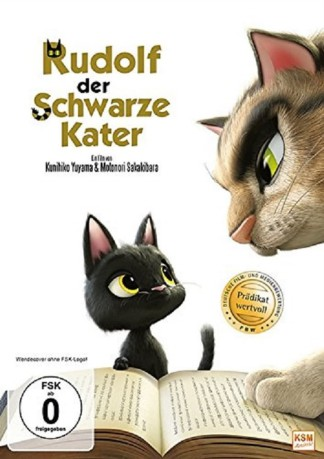

#8337 Rudolf der schwarze Kater
Alternativ: Rudolf the Black Cat (Englischer Titel)
 
 IMDB-Wertung: 6.7 / 10
IMDB-Wertung: 6.7 / 10  Metascore: 0
Metascore: 0 
Der kleine schwarze Kater Rudolf führt ein wohlbehütetes Leben als Hauskatze, bis ihn eines Tages die Lust nach Abenteuern packt. Er verlässt sein Zuhause um die Welt zu erkunden und landet dabei versehentlich auf der Ladefläche eines LKWs. 400 Kilometer später befindet sich Rudolf völlig orientierungslos, alleine und weit weg von seiner Heimat in der großen Stadt Tokio wieder. So abenteuerlich hatte sich der kleine Kater das alles dann doch nicht vorgestellt. Glücklicherweise trifft er auf Gibtsviel, einen Straßenkater, der Tokio kennt, die Menschensprache spricht und sogar lesen kann. Trotzdem erwartet Rudolf ein aufregendes Abenteuer, bei dem er immer mehr über sich selbst hinauswachsen und auch über seinen eigenen Schatten springen muss...
Jahr: 2016
Dauer: 88 Minuten
FSK: 0
Land: Japan Studio: KSMTonspuren: DTS - ,
Untertitel: Deutsch,
Auflösung: 1080p (1920x1080) Größe: 6461 MB
Genre: Komödie, Abenteuer, Animation/Trick
Regisseur: Motonori Sakakibara, Kunihiko Yuyama
Drehbuch: Hiroshi Saitô
Soundtrack: Naoki Satô
Darsteller:
- Ryôhei Suzuki als Gottalot
- Akio Ôtsuka als Master Kuma
 Arata Furuta als Devil
Arata Furuta als Devil- Mao Inoue als Rudolf
- Nana Mizuki als Misha
- Norito Yashima als Buchi
- Rio Sasaki als Rie
- Sandayû Dokumamushi als Truck driver
- Yuka Terasaki als Rudolf's younger brother
Datei: X:\Kinder Anime\Div Anime\Rudolf der schwarze Kater (2016, FSK0, 1920x1080).mkv seit 24.02.2018
Festplatte: Kinder-Filme+Trick
 Es gibt insgesamt 40 Filme in der Gruppe 'Kinder Anime\Div Anime'
Es gibt insgesamt 40 Filme in der Gruppe 'Kinder Anime\Div Anime'